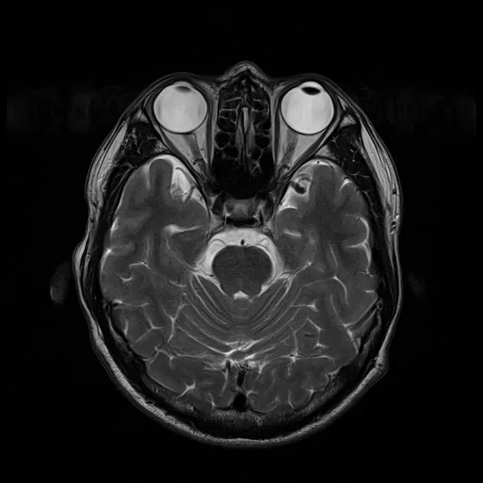
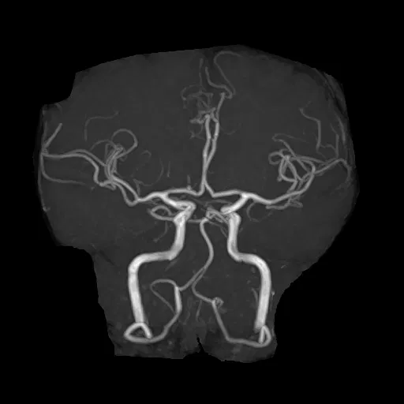
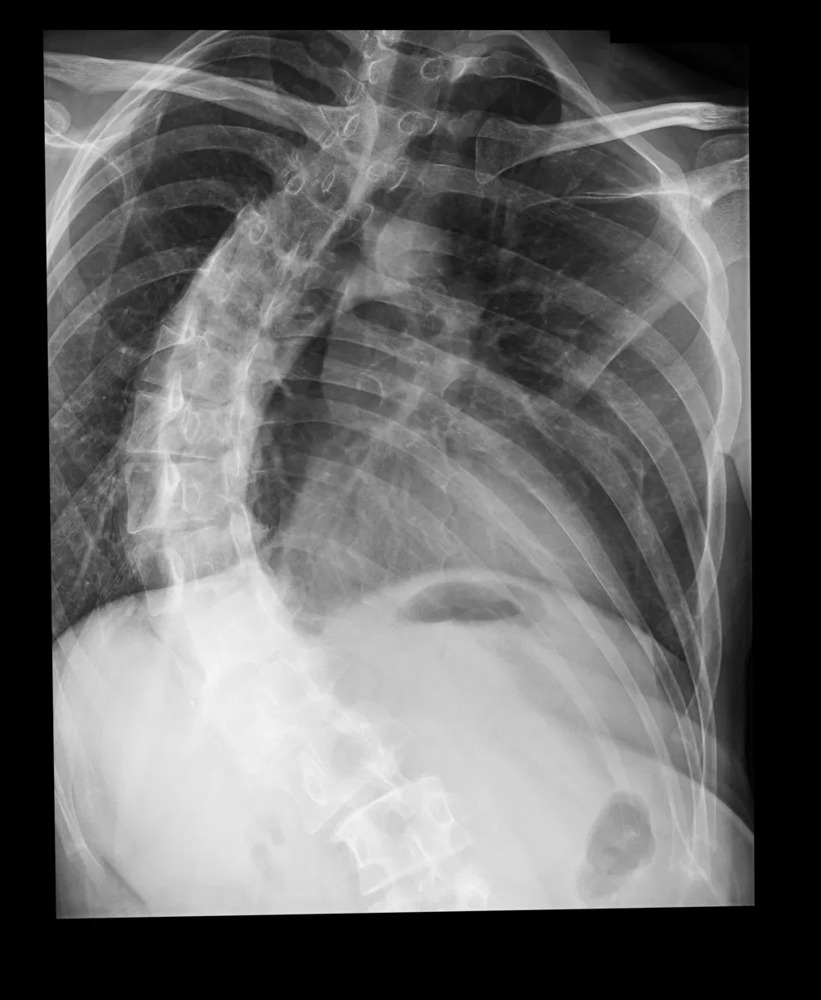

私のプロフィール
| ハンドルネーム | 私（ひとまず） |
|---|---|
| 住んでいる所 | 中国地方 |
| おしごと | フリーランスのエンジニア（かもね） |
| すきなこと | 今は特にありません |
| すきな音楽 | Nujabes / Pat Metheny |
委託を受けて、ホームページを作って、運用・保守しています。
特にNujabes / Pat Methenyが好きです。気に入った音楽ばかり聞いています。
インターネットを始めたのは90年代です。ホームページ、掲示板、IRC、ネットゲームで遊んでいました。このページは、そのころのホームページをまねて作りました。
これまでに撮った画像です。



※ 画像のそばの説明は、撮影の種類だけです。診断ではありません。